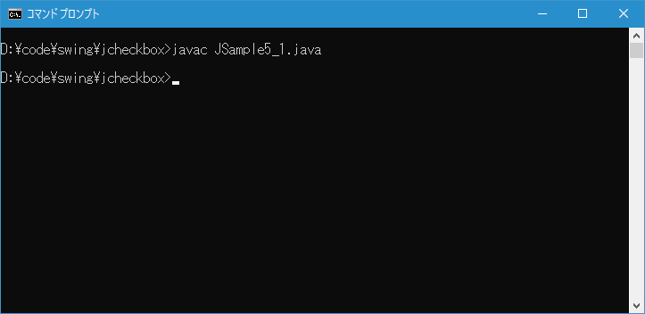
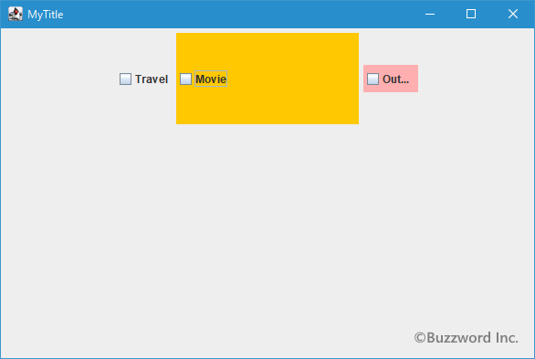

チェックボックスのサイズをピクセル単位で設定する
チェックボックスのサイズは、チェックボックスに表示される文字列や画像の大きさにあらかじめ決まりますが、ピクセル単位でサイズを指定することもできます。ここではチェックボックスにピクセル単位でサイズを設定する方法について解説します。
ピクセル単位でサイズを設定する
チェックボックスのサイズをピクセル単位で設定するには JCheckBox クラスの親クラスである JComponent クラスで用意されている setPreferredSize メソッドを使います。
public void setPreferredSize?(Dimension preferredSize)
このコンポーネントの適切なサイズを設定します。 preferredSizeがnullの場合、UIで適切なサイズを要求します。
オーバーライド:
setPreferredSize 、クラス: Component
パラメータ:
preferredSize - 新しい推奨サイズ、またはnull
引数にはサイズを表す Dimension クラスのオブジェクトを指定します。( Dimension クラスの詳細は「Dimensionクラス」を参照して下さい)。
実際の使い方は次のようになります。
JCheckBox check = new JCheckBox("Movie");
check.setPreferredSize(new Dimension(200, 100));
コンポーネントでサイズを設定する場合、使用しているレイアウトマネージャーによってはコンポーネントに設定したサイズは無視される場合がありますのでご注意ください。例えばレイアウトマネージャーとして BorderLayout を使用している場合はコンポーネントに設定されたサイズは無視されます。
なおサイズを指定することによってチェックボックスに設定した文字列を全て表示できなくなる場合があります。その場合は文字列が"..."などのように置き換えられて表示されます。
サンプルプログラム
それでは簡単なサンプルプログラムを作って試してみます。テキストエディタで次のように記述したあと、 JSample5_1.java という名前で保存します。
import javax.swing.JFrame;
import javax.swing.JCheckBox;
import javax.swing.JPanel;
import java.awt.Container;
import java.awt.BorderLayout;
import java.awt.Dimension;
import java.awt.Color;
class JSample5_1 extends JFrame{
public static void main(String args[]){
JSample5_1 frame = new JSample5_1("MyTitle");
frame.setVisible(true);
}
JSample5_1(String title){
setTitle(title);
setBounds(100, 100, 600, 400);
setDefaultCloseOperation(JFrame.EXIT_ON_CLOSE);
JCheckBox check1 = new JCheckBox("Travel");
JCheckBox check2 = new JCheckBox("Movie");
check2.setPreferredSize(new Dimension(200, 100));
check2.setBackground(Color.ORANGE);
JCheckBox check3 = new JCheckBox("Outdoor");
check3.setPreferredSize(new Dimension(60, 30));
check3.setBackground(Color.PINK);
JPanel p = new JPanel();
p.add(check1);
p.add(check2);
p.add(check3);
Container contentPane = getContentPane();
contentPane.add(p, BorderLayout.CENTER);
}
}
次のようにコンパイルを行います。
javac JSample5_1.java

コンパイルが終わりましたら実行します。
java JSample5_1
チェックボックスを 3 つ追加しました。 2 つ目と 3 つ目のチェックボックスにはピクセル単位でサイズを指定しています。またサイズが分かりやすいように背景色も設定しています。

3 つ目のチェックボックスはピクセル単位でのサイズ指定によってチェックボックスに設定されている文字列が表示しきれなくなっています。その為、表示できない部分は "..." と表示されています。
-- --
チェックボックスにピクセル単位でサイズを設定する方法について解説します。
( Written by Tatsuo Ikura )

著者 / TATSUO IKURA
初心者～中級者の方を対象としたプログラミング方法や開発環境の構築の解説を行うサイトの運営を行っています。